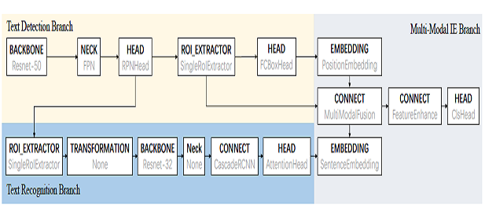
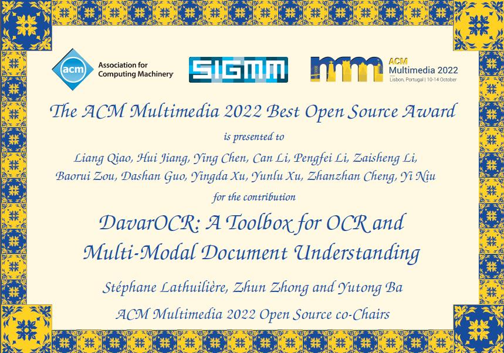

DavarOCR: A Toolbox for OCR and Multi-Modal Document Understanding

Abstract
This paper presents DavarOCR, an open-source toolbox for OCR and document understanding tasks. DavarOCR currently implements 19 advanced algorithms, covering 9 different task forms. DavarOCR provides detailed usage instructions and the trained models for each algorithm. Compared with the previous opensource OCR toolbox, DavarOCR has relatively more complete support for the sub-tasks of the cutting-edge technology of document understanding. In order to promote the development and application of OCR technology in academia and industry, we pay more attention to the use of modules that different sub-domains of technology can share. DavarOCR is publicly released at https://github.com/hikopensource/Davar-Lab-OCR.
[Paper]
The work has obtained the Best Open Source Award in ACM MM 2022

Recommended Citations
If you find our work is helpful to your research, please feel free to cite us:
@inproceedings{DBLP:conf/mm/QiaoJCLLLZGXXCN22,
author = {Liang Qiao and
Hui Jiang and
Ying Chen and
Can Li and
Pengfei Li and
Zaisheng Li and
Baorui Zou and
Dashan Guo and
Yingda Xu and
Yunlu Xu and
Zhanzhan Cheng and
Yi Niu},
title = {DavarOCR: {A} Toolbox for {OCR} and Multi-Modal Document Understanding},
booktitle = {ACM MM},
pages = {7355--7358},
year = {2022},
}